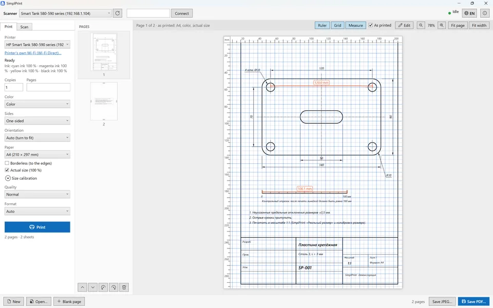
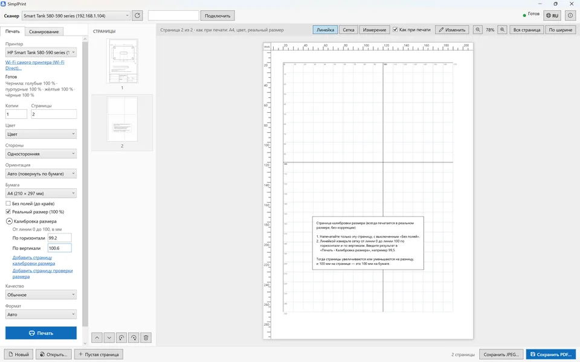
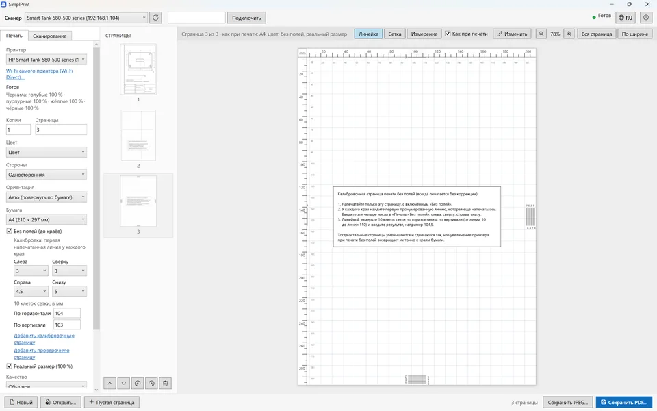
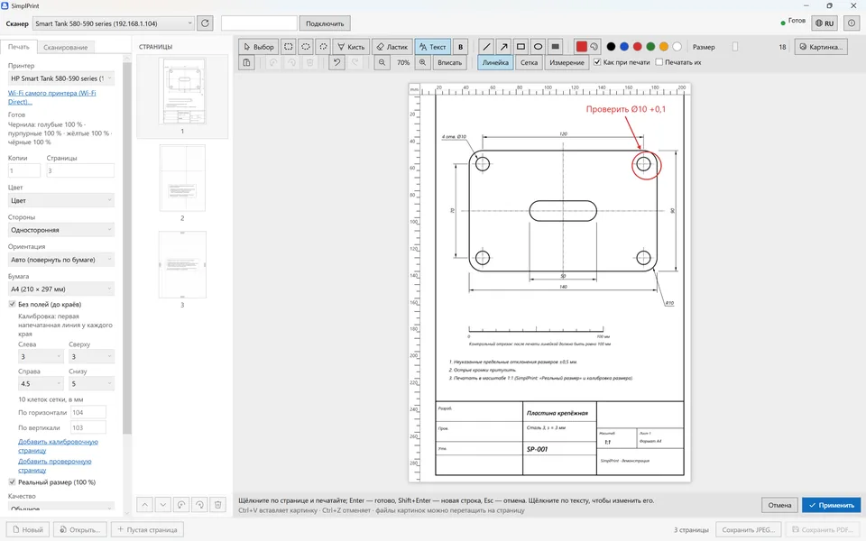
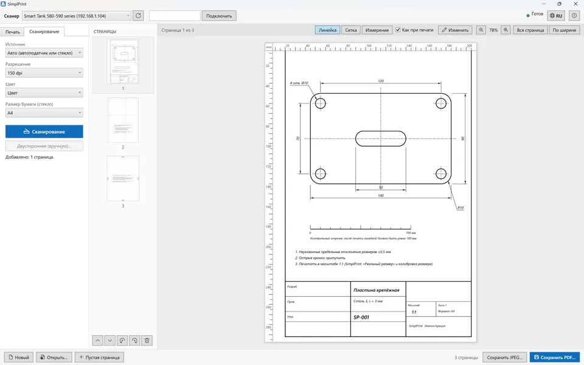
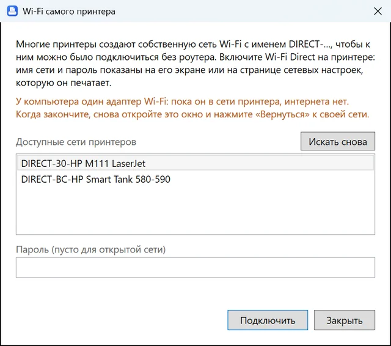

Actual size (100 %)
Pages print at their real size, centered on the paper, without shrinking to fit the margins. What falls in the margins shows in the preview.
1:1 scaleSimplPrint is simple engineering printing. Drawings, templates, sewing patterns and stencils print at 1:1: a ruler, a grid and measuring over the print preview show where every line lands on the paper, and a calibration corrects your printer's own error.

To fit a page inside the printer's margins, Windows and most apps shrink it. Add the printer's own error, and a part cut out from a template no longer fits.
An A4 page printed "fit to page" shrinks to the edges of the margins.
A printer's typical own error, across and down, each direction its own.
What 200 mm can lose when the shrinking and the printer's error add up.
This is a simplified copy of SimplPrint's preview. Drag with the mouse or a finger between two points to get the distance in millimeters on paper. Switch the mode to see what ordinary printing does to the 100 mm check segment.
A click without dragging clears the measurements, as in the app.
SimplPrint prints a page with a 10 mm grid. You measure it with an ordinary ruler and type in two numbers, across and down. From then on every page is enlarged or shrunk by exactly the printer's error.
Steps: print the grid → measure it with a ruler → type it into SimplPrint.
We have not seen the following in ordinary printing apps: here sizes can be seen, checked and corrected before the paper leaves the printer.
Pages print at their real size, centered on the paper, without shrinking to fit the margins. What falls in the margins shows in the preview.
1:1 scaleCorrects the printer's error across and down separately. Measure once, and 100 mm on the page are 100 mm on paper.
Rarely found elsewhereA millimeter ruler and grid over the preview, and the distance between any two points. They are not on the paper, unless you want them printed.
In the preview and the editorPrinters enlarge borderless pages and cut off the edges. A calibration page shows how much, and the print matches the preview.
A4, A5, photo sizes and moreReal screenshots with an A4 drawing; most show the Russian interface, which switches to English with one button. Click a picture to enlarge it.
Turn on Ruler, Grid and Measure above the preview. "As printed" gives millimeters on the paper: with the printer's margins, shrinking to fit and the calibration. Here the holes are exactly 120.0 mm apart and the check segment measures 100.1 mm.

"Add size calibration page" adds a 10 mm grid and sets printing up for it. Measure it from line 0 to 100 and type the result in: this printer printed 99.2 mm across and 100.6 mm down.

Numbered lines at each edge show how much the printer cuts off. Enter the first printed lines and borderless prints match the preview to the millimeter.

Marks, arrows, shapes, text, brush and eraser, pictures from a file or the clipboard. The ruler, grid and measurements can be drawn into the page and printed.

From the glass and the document feeder, two-sided by turning the stack by hand. Network scanners over eSCL (AirScan, Mopria), USB scanners through WIA. Saves PDF and JPEG.

No router nearby? SimplPrint joins the printer's DIRECT-… network, finds the printer and scanner, and takes the PC back to the home network with one click.
No vendor software and no driver hunting: network devices need nothing installed.
Prints over IPP (IPP Everywhere, AirPrint, Mopria) and scans over eSCL. Finds the printer and scanner by itself, even when they are different devices.
Printers and scanners installed in Windows, on a cable or with their own driver. The job is followed in the Windows queue.
Joins the printer's own DIRECT-… network without a router and goes back to the home network with one click.
The printer is reached straight through Wi-Fi or Ethernet, past the VPN's routes. If a VPN blocks the network, the app says what to exclude.
Pages go as Apple raster to printers that take only that.
No telemetry, no account. Documents never leave the PC except to go to your printer.
Compared with what Windows printing, PDF viewers and printer makers' apps usually do.
| Feature | SimplPrint | Windows printing and PDF viewers | Printer makers' apps |
|---|---|---|---|
| Printing at actual size, without shrinking | ✓ | often ("Actual size") | depends on the app |
| Printer scale calibration with a ruler | ✓ | — | — |
| Ruler, grid and measuring over the preview | ✓ | — | — |
| "As printed" preview with the printer's margins | ✓ | approximate | approximate |
| Borderless calibration | ✓ | — | — |
| Network printing and scanning without drivers | ✓ | driver needed | own app and driver |
| Works with a VPN on | ✓ | often misses the printer | often misses the printer |
| No installation, account or telemetry | ✓ | ✓ | often an account |
Compared with what these kinds of apps typically offer; individual apps may have features of their own.
SimplPrint is in open beta. Feedback is most welcome on what cannot be checked without your hardware:
Please mention your printer and Windows version. The app's log is in %LOCALAPPDATA%\PrinterDesk\logs.
One file, SimplPrint.exe, 67 MB. Nothing to install, not even .NET.
If Windows SmartScreen warns you, click More info → Run anyway: the file is not code-signed yet.
The printer is found by itself. Tick Actual size, do the size calibration once, and print at 1:1.
Yes. It is free, with no ads in the app, no account and no telemetry. The code is under the MIT license.
Ordinary printing shrinks the page to fit inside the printer's margins (an A4 page comes out at about 97 %), and the printer adds its own error of about 1 %. SimplPrint prints at actual size and has a size calibration that corrects the printer's error.
On the Print tab open Size calibration, click Add size calibration page and print it. Measure the grid from line 0 to 100 across and down with a ruler and type in the two numbers. A check page shows the result.
Not for network printers and all-in-ones: SimplPrint prints over IPP (IPP Everywhere, AirPrint, Mopria) and scans over eSCL. Printers and scanners on USB work through the driver installed in Windows.
The file is not code-signed yet, so SmartScreen shows a warning. Click More info, then Run anyway.
Yes, with most VPNs: the app reaches the printer straight through Wi-Fi or Ethernet. If a VPN blocks the local network (kill switch), SimplPrint names the subnet to exclude in the VPN's settings.
Beta 0.6.0 for Windows 10 and 11 (64-bit). One file, no installation. Settings and unsaved pages are kept between runs.
Download SimplPrint.exe67 MB · free